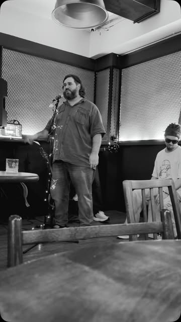

01
Трещины
История об отношениях с настолько травмированной девушкой, что после них самому впору лечить голову.
Пафосный металкор. Я попытался представить, как бы Amatory написала такую песню.
Демо / вокал / тексты / концепции
Чтобы слушатель словил офигевание или пустил слезу. Но, наверное, смогу писать и в более легких стилях.
01 / подход
Для меня миссия музыки — передать эмоции или мысли. Поэтому работаю с самыми разными стилями — и как автор, и как вокалист.
02 / тексты и концепции
от хтони до самоиронии
История об отношениях с настолько травмированной девушкой, что после них самому впору лечить голову.
Пафосный металкор. Я попытался представить, как бы Amatory написала такую песню.
Речь над могилой врага, который имел наглость умереть без помощи лирического героя.
Он рассуждает, каким неприятным человеком был покойный и как разочаровывает, что теперь уже не получится собственноручно сделать покойному плохо. Яркие выражения построены на контрасте низкого и высокого стиля — типа «преисподняя от тебя проблюется».
Латынь здесь специально, чтобы при поверхностном прослушивании смысл был непонятен, но считывалась атмосферность Doom metal. И только тот, кто не поленится перевести текст, получит глубокое откровение о лирическом герое.
Vir te generat,
Et femina te creat.
Lucifer horret,
Facta tua abhorret.
Mare te spernit,
Et unda te aspernit.
Orcus te vomit,
Ut lac putre evomit.
Tumulo scribam:
Doleo, quod te rursus
non occidam.
Maledicta sis.
Nullus dolor in terra,
nulla poena in inferno
tibi satis crudelis est.
Hoc unum doleo:
quod has poenas
manibus meis
tibi inferre non possum.
Комично-драматичная песня — стеб над архетипом «айтишник пошел заниматься музыкой», во многом автобиографичный.
Проблема лирического героя совсем не в том, что он плохо поёт. Напротив, его называют талантливым, но это только раздражает: от музыки он хотел совсем другого.
Черновик, который я не планирую доделывать, но пусть будет как пример не драматического. Стиль музыки не важен, хоть бард, хоть ска, хоть рок — тут суть в тексте.

03 / интерпретация
Лайв с концерта группы «Хоботаника» в «Гадюке».
Пример кавера, который не «нахера вы это играете, оригинал был лучше», а кавер как способ раскрыть песню с другой стороны, выделить в ней другой смысл, может быть, даже более близкий к изначальной задумке автора.
Текст — изначальный цоевский. Музыка — импровизация клавишника Хоботаники с аллюзией на оригинал и Show Must Go On. Я — вокалист и худрук по этой песне.
04 / пример клипа
Лодка, ночь и образ викинга.
В роли моря — водоём в парке Ахтанак.
Звук записан лайв на телефон прямо в лодке — это не студийная запись.
05 / живьем
сборник и семь разных контекстов
06 / использование ИИ
Я не позиционирую себя как инструменталист или композитор, хотя задатки композитора определённо есть.
Моя роль — задать художественную рамку: какое чувство должна передавать музыка и как примерно она должна звучать.
Воплотить эту рамку можно вместе с живыми музыкантами или с помощью инструментов генерации музыки. Я работал в обоих форматах.